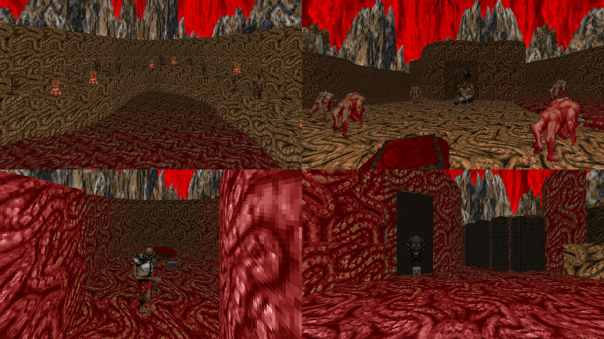

DOWNLOAD LINKS


| Year | 2016 |
| IWAD | doom2.wad |
| Source port | ZDoom |
| Game mode(s) | Single-player |
| Map(s) contributed | MAP11 |
Abisso Oscuro is a community project that was hosted by Darsycho over on a small forum called Explosive Nachos, formerly known as Abyss Tower. It was originally intended to be a full 32-level megawad, but after years of next to no progress, what was contributed by the community members was compiled into a 17-level wad.
My contribution to the project was a map named “Grotesquorium”, which occupies the MAP11 slot. It’s a semi-non-linear level with a gruesome flesh aesthetic – hence its name – and fairly slow-paced gameplay. Enemy encounters are fairly scarce, and progression is controlled primarily by means of switches that lower certain bars. The final battle arena, however, brings some variety to both the visuals and the gameplay.